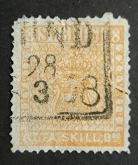
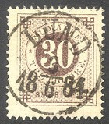
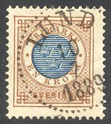
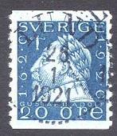

HISTORIK
VERKSAMHET
MÖTESPROGRAM
MEDLEMSKAP
KONTAKTA FÖRENINGEN
VAD MAN KAN SAMLA PÅ
LFF 1892
ERNST LJUNGSTRÖM (LFF:s förste ordförande)
JONAS JOHNSSON (LFF:s förste vice ordförande)
FRIMÄRKEN MED ANKNYTNING TILL LUND
LUNDAUTSTÄLLNINGEN 1907
FILATELISTISKA LÄNKAR
Nya medlemmar är hjärtligt välkomna!